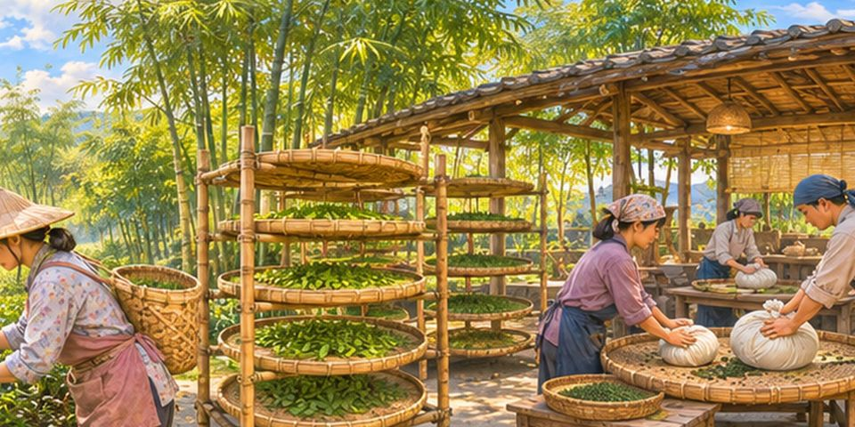
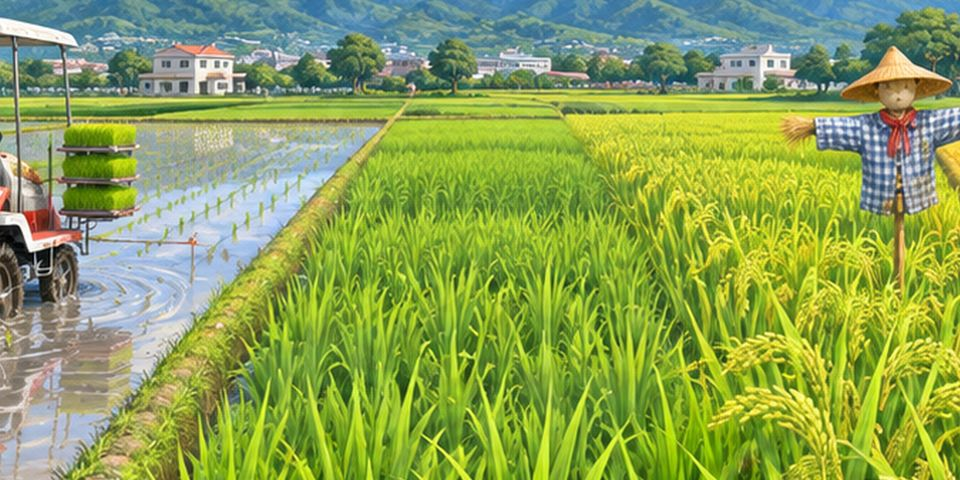
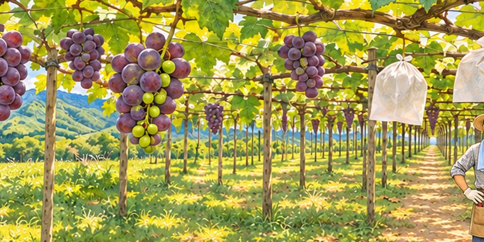

第一版從產地到餐桌
茶、筍、梅的山城旅行・5 關
- 🍵 鹿谷・凍頂烏龍茶
- 🫖 魚池・日月潭紅茶
- 💧 埔里・茭白筍
- 🫙 信義・梅子
- 🎋 竹山・竹筍

第二版咖啡、香蕉到稻米
加工、催熟與水土保持・6 關
- ☕ 國姓・咖啡
- 🍌 集集・香蕉
- 🔥 中寮・龍眼
- 🥬 仁愛・高冷蔬菜
- 🌾 草屯・稻米
- 🍍 名間・鳳梨

第三版走進果園與菇舍
水果與香菇怎麼長出來・6 關
- 🌼 埔里・百香果
- 🍄 魚池・香菇
- 🍇 水里・巨峰葡萄
- 🍊 仁愛・甜柿
- 🍓 國姓・草莓
- 🧺 南投市・荔枝